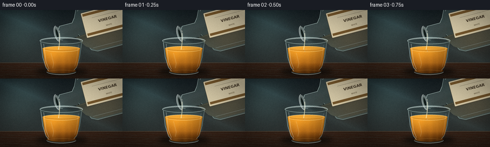
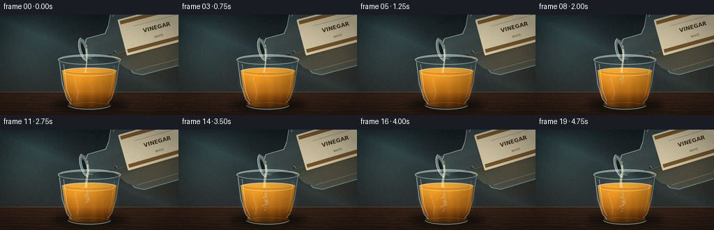
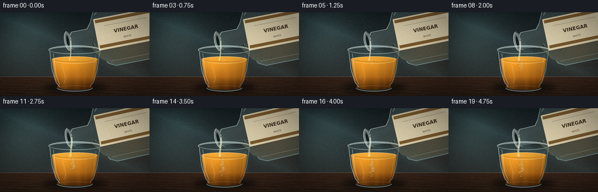

CODING AGENTS AS PIXEL WORLD MODELS
traex/DeepSeek-V4.1-Flash · phygen_140
点击播放 · 原生 RGB 像素
逐轮保存的候选
回放视频、检查图与代码变化。
每份候选均可单独播放。实际图片检查记录在下方工具轨迹中。
候选 01播放与检查图
点击播放 · 原生 RGB 像素


展开代码变化
--- 上一保存版本
+++ 本次保存版本
@@ -0,0 +1,504 @@
+from __future__ import annotations
+
+import math
+from pathlib import Path
+
+import numpy as np
+from PIL import Image, ImageDraw, ImageFilter, ImageFont
+
+import artifact_io
+
+
+WIDTH = 256
+HEIGHT = 144
+FRAMES = 20
+S = 4
+W = WIDTH * S
+H = HEIGHT * S
+
+CASE_DIR = Path(__file__).resolve().parent
+FONT_BOLD = "/usr/share/fonts/truetype/dejavu/DejaVuSans-Bold.ttf"
+FONT_REGULAR = "/usr/share/fonts/truetype/dejavu/DejaVuSans.ttf"
+
+
+def sc(value: float) -> int:
+ return int(round(value * S))
+
+
+def rgba(r: int, g: int, b: int, a: int = 255) -> tuple[int, int, int, int]:
+ return r, g, b, a
+
+
+def smoothstep(x: float) -> float:
+ x = max(0.0, min(1.0, x))
+ return x * x * (3.0 - 2.0 * x)
+
+
+def gradient_background() -> Image.Image:
+ yy = np.linspace(0.0, 1.0, H, dtype=np.float32)[:, None]
+ xx = np.linspace(0.0, 1.0, W, dtype=np.float32)[None, :]
+
+ top = np.array([21.0, 30.0, 34.0], dtype=np.float32)
+ middle = np.array([42.0, 52.0, 53.0], dtype=np.float32)
+ lower = np.array([51.0, 43.0, 36.0], dtype=np.float32)
+ blend = np.clip(yy / 0.78, 0.0, 1.0)
+ rgb = top * (1.0 - blend[..., None]) + middle * blend[..., None]
+ rgb = rgb * (1.0 - 0.34 * yy[..., None]) + lower * (0.34 * yy[..., None])
+ rgb = np.broadcast_to(rgb, (H, W, 3)).copy()
+
+ # Soft, out-of-focus window light on the left and a warm practical on the right.
+ glow = np.exp(-(((xx - 0.15) / 0.22) ** 2 + ((yy - 0.25) / 0.38) ** 2))
+ rgb += glow[..., None] * np.array([24.0, 35.0, 34.0])
+ warm = np.exp(-(((xx - 0.88) / 0.18) ** 2 + ((yy - 0.34) / 0.30) ** 2))
+ rgb += warm[..., None] * np.array([24.0, 14.0, 5.0])
+
+ # Broad diagonal reflection in the back wall.
+ diagonal = np.clip(1.0 - abs((xx - 0.18) * 0.76 - (yy - 0.18)) / 0.20, 0.0, 1.0)
+ rgb += (diagonal**2)[..., None] * np.array([8.0, 13.0, 14.0])
+
+ rng = np.random.default_rng(17)
+ noise = rng.normal(0.0, 1.0, (H // 8, W // 8)).astype(np.float32)
+ noise = np.asarray(
+ Image.fromarray(((noise - noise.min()) / (np.ptp(noise) + 1e-6) * 255).astype(np.uint8)).resize(
+ (W, H), Image.Resampling.BICUBIC
+ ),
+ dtype=np.float32,
+ )
+ rgb += (noise[..., None] - 126.0) * 0.020
+ return Image.fromarray(np.clip(rgb, 0, 255).astype(np.uint8), "RGB").convert("RGBA")
+
+
+def add_counter(image: Image.Image) -> Image.Image:
+ layer = Image.new("RGBA", (W, H), (0, 0, 0, 0))
+ draw = ImageDraw.Draw(layer)
+ top = sc(111)
+ draw.rectangle((0, top, W, H), fill=rgba(56, 36, 25, 255))
+ for y in range(top, H):
+ q = (y - top) / max(1, H - top)
+ color = (
+ int(58 - 15 * q),
+ int(36 - 8 * q),
+ int(24 - 5 * q),
+ 255,
+ )
+ draw.line((0, y, W, y), fill=color)
+
+ # Counter edge and wood grain.
+ draw.line((0, top, W, top), fill=rgba(150, 107, 72, 145), width=sc(0.8))
+ draw.line((0, top + sc(1.2), W, top + sc(1.2)), fill=rgba(22, 15, 12, 130), width=sc(0.6))
+ for index in range(7):
+ y0 = 116 + index * 4.2
+ points = []
+ for x in range(-10, 270, 4):
+ y = y0 + 0.8 * math.sin(x * 0.08 + index * 1.9) + 0.3 * math.sin(x * 0.27)
+ points.append((sc(x), sc(y)))
+ color = rgba(120, 75, 43, 33 + index * 3)
+ draw.line(points, fill=color, width=sc(0.45 + 0.12 * (index % 3)))
+
+ image.alpha_composite(layer)
+ return image
+
+
+def blur_ellipse(
+ base: Image.Image,
+ box: tuple[float, float, float, float],
+ color: tuple[int, int, int, int],
+ blur: float,
+) -> None:
+ layer = Image.new("RGBA", (W, H), (0, 0, 0, 0))
+ draw = ImageDraw.Draw(layer)
+ draw.ellipse(tuple(sc(v) for v in box), fill=color)
+ layer = layer.filter(ImageFilter.GaussianBlur(sc(blur)))
+ base.alpha_composite(layer)
+
+
+def draw_glass_back(base: Image.Image, t: float) -> tuple[Image.Image, Image.Image]:
+ # Contact shadow and a cool transmission patch behind the glass.
+ blur_ellipse(base, (74, 121, 183, 138), (4, 7, 6, 170), 5.2)
+ blur_ellipse(base, (85, 64, 171, 133), (145, 178, 170, 22), 3.0)
+
+ glass = Image.new("RGBA", (W, H), (0, 0, 0, 0))
+ draw = ImageDraw.Draw(glass)
+ outer = [
+ (sc(84), sc(64)),
+ (sc(89), sc(100)),
+ (sc(96), sc(121)),
+ (sc(103), sc(130)),
+ (sc(153), sc(130)),
+ (sc(160), sc(121)),
+ (sc(167), sc(100)),
+ (sc(172), sc(64)),
+ ]
+ draw.polygon(outer, fill=rgba(118, 166, 164, 28))
+ draw.ellipse((sc(84), sc(57), sc(172), sc(72)), fill=rgba(142, 190, 186, 20))
+ draw.ellipse((sc(99), sc(126), sc(157), sc(136)), fill=rgba(140, 184, 178, 36))
+ base.alpha_composite(glass)
+ return base, glass
+
+
+def oil_mask() -> Image.Image:
+ mask = Image.new("L", (W, H), 0)
+ draw = ImageDraw.Draw(mask)
+ draw.polygon(
+ [
+ (sc(89), sc(80)),
+ (sc(94), sc(116)),
+ (sc(101), sc(126)),
+ (sc(155), sc(126)),
+ (sc(162), sc(116)),
+ (sc(167), sc(80)),
+ ],
+ fill=255,
+ )
+ draw.ellipse((sc(89), sc(76), sc(167), sc(86)), fill=255)
+ draw.ellipse((sc(98), sc(122), sc(158), sc(133)), fill=255)
+ return mask.filter(ImageFilter.GaussianBlur(sc(0.25)))
+
+
+def draw_oil(base: Image.Image, mask: Image.Image, t: float) -> Image.Image:
+ yy = np.linspace(0.0, 1.0, H, dtype=np.float32)[:, None]
+ xx = np.linspace(0.0, 1.0, W, dtype=np.float32)[None, :]
+
+ upper = np.array([211.0, 135.0, 35.0], dtype=np.float32)
+ middle = np.array([169.0, 92.0, 18.0], dtype=np.float32)
+ bottom = np.array([83.0, 43.0, 8.0], dtype=np.float32)
+ q = np.clip((yy - 0.52) / 0.38, 0.0, 1.0)
+ rgb = upper * (1.0 - q[..., None]) + middle * q[..., None]
+ q2 = np.clip((yy - 0.77) / 0.16, 0.0, 1.0)
+ rgb = rgb * (1.0 - q2[..., None]) + bottom * q2[..., None]
+ rgb = np.broadcast_to(rgb, (H, W, 3)).copy()
+
+ glow = np.exp(-(((xx - 0.43) / 0.19) ** 2 + ((yy - 0.58) / 0.17) ** 2))
+ rgb += glow[..., None] * np.array([49.0, 37.0, 7.0])
+ side_shadow = np.exp(-(((xx - 0.66) / 0.12) ** 2))
+ rgb -= side_shadow[..., None] * np.array([31.0, 20.0, 6.0])
+
+ # Thin refractive caustics move very slowly through the liquid.
+ for center, width, strength in ((0.43, 0.030, 18.0), (0.52, 0.018, 10.0), (0.57, 0.009, 7.0)):
+ xpos = center + 0.005 * math.sin(t * math.tau + center * 20.0)
+ band = np.exp(-((xx - xpos) / width) ** 2) * np.clip((yy - 0.54) / 0.35, 0.0, 1.0)
+ rgb += band[..., None] * np.array([strength * 1.5, strength, strength * 0.25])
+
+ oil_rgb = Image.fromarray(np.clip(rgb, 0, 255).astype(np.uint8), "RGB").convert("RGBA")
+ alpha = np.asarray(mask, dtype=np.float32)[..., None] / 255.0
+ oil_np = np.asarray(oil_rgb, dtype=np.float32)
+ oil_np[..., 3:4] *= alpha * 0.97
+ oil = Image.fromarray(np.clip(oil_np, 0, 255).astype(np.uint8), "RGBA")
+ base.alpha_composite(oil)
+ return base
+
+
+def draw_oil_surface(base: Image.Image, t: float) -> None:
+ layer = Image.new("RGBA", (W, H), (0, 0, 0, 0))
+ draw = ImageDraw.Draw(layer)
+
+ draw.ellipse((sc(89), sc(76), sc(167), sc(86)), fill=rgba(228, 155, 47, 170))
+ draw.ellipse((sc(92), sc(77), sc(164), sc(84)), fill=rgba(241, 177, 67, 105))
+ draw.arc((sc(90), sc(76), sc(166), sc(86)), 190, 350, fill=rgba(255, 222, 143, 210), width=sc(0.85))
+ draw.arc((sc(94), sc(78), sc(162), sc(85)), 8, 170, fill=rgba(93, 48, 8, 115), width=sc(0.55))
+
+ contact_x = 125.4 + 0.8 * math.sin(t * math.tau * 1.4)
+ contact_y = 81.2 + 0.7 * math.sin(t * math.tau * 2.0 + 0.5)
+ pulse = (t * 1.7) % 1.0
+ for index, offset in enumerate((0.0, 0.42)):
+ phase = (pulse + offset) % 1.0
+ radius = 3.0 + 10.5 * phase
+ alpha = int(130 * (1.0 - phase) ** 1.5)
+ box = (
+ sc(contact_x - radius),
+ sc(contact_y - radius * 0.25),
+ sc(contact_x + radius),
+ sc(contact_y + radius * 0.25),
+ )
+ draw.arc(box, 5, 175, fill=rgba(255, 231, 172, alpha), width=sc(0.55))
+
+ # Bright meniscus on the near edge.
+ draw.arc((sc(91), sc(77), sc(165), sc(88)), 12, 168, fill=rgba(255, 223, 145, 185), width=sc(0.8))
+ base.alpha_composite(layer)
+
+
+def draw_plume(base: Image.Image, mask: Image.Image, t: float) -> None:
+ if t <= 0.02:
+ return
+ strength = smoothstep(t * 1.15)
+ plume = Image.new("RGBA", (W, H), (0, 0, 0, 0))
+ draw = ImageDraw.Draw(plume)
+ contact_x = 125.3
+ contact_y = 82.5
+ depth = 8.0 + 29.0 * strength
+
+ for strand in range(7):
+ points = []
+ phase = strand * 1.37
+ length = depth * (0.55 + 0.10 * (strand % 4))
+ for step in range(21):
+ q = step / 20.0
+ y = contact_y + length * q
+ spread = (0.5 + q * 3.8) * math.sin(q * math.pi * 1.7 + phase + t * 2.1)
+ x = contact_x + spread + (strand - 3) * q * 0.65
+ points.append((sc(x), sc(y)))
+ alpha = int((26 + (strand % 3) * 9) * strength)
+ width = sc(0.85 + 0.30 * (strand % 4))
+ draw.line(points, fill=rgba(255, 238, 192, alpha), width=width, joint="curve")
+
+ # A denser, sinking cloud gives the stream a readable destination.
+ for index in range(11):
+ q = (index + 1) / 12.0
+ x = contact_x + math.sin(index * 2.18 + t * 2.0) * (1.0 + 2.4 * q)
+ y = contact_y + depth * q * 0.82
+ rx = 1.0 + 2.3 * q
+ ry = 0.65 + 1.4 * q
+ alpha = int((31 + 13 * (index % 3)) * strength)
+ draw.ellipse((sc(x - rx), sc(y - ry), sc(x + rx), sc(y + ry)), fill=rgba(255, 241, 204, alpha))
+
+ plume = plume.filter(ImageFilter.GaussianBlur(sc(1.1)))
+ clipped = Image.new("RGBA", (W, H), (0, 0, 0, 0))
+ clipped.paste(plume, (0, 0), mask)
+ base.alpha_composite(clipped)
+
+ # Small pale droplets make the mixing legible at the target resolution.
+ drops = Image.new("RGBA", (W, H), (0, 0, 0, 0))
+ ddraw = ImageDraw.Draw(drops)
+ rng = np.random.default_rng(29)
+ for index in range(18):
+ q = (index + 0.7) / 19.0
+ if q > strength:
+ continue
+ x = contact_x + rng.normal(0.0, 3.0) * (0.35 + q)
+ y = 86.0 + q * (depth - 4.0)
+ radius = 0.35 + rng.random() * 0.65
+ ddraw.ellipse(
+ (sc(x - radius), sc(y - radius * 1.4), sc(x + radius), sc(y + radius * 1.4)),
+ fill=rgba(255, 246, 215, int(70 + 80 * (1.0 - q))),
+ )
+ drops = drops.filter(ImageFilter.GaussianBlur(sc(0.18)))
+ clipped_drops = Image.new("RGBA", (W, H), (0, 0, 0, 0))
+ clipped_drops.paste(drops, (0, 0), mask)
+ base.alpha_composite(clipped_drops)
+
+
+def make_bottle(mouth: tuple[float, float], angle: float) -> Image.Image:
+ sw, sh = 400, 330
+ sprite = Image.new("RGBA", (sw * S, sh * S), (0, 0, 0, 0))
+ draw = ImageDraw.Draw(sprite)
+
+ def p(x: float, y: float) -> tuple[int, int]:
+ return int(round(x * S)), int(round(y * S))
+
+ body = [
+ (30, 145),
+ (34, 139),
+ (61, 139),
+ (68, 130),
+ (78, 109),
+ (87, 101),
+ (99, 98),
+ (248, 98),
+ (258, 106),
+ (264, 121),
+ (264, 189),
+ (257, 204),
+ (246, 210),
+ (98, 210),
+ (86, 204),
+ (78, 187),
+ (68, 166),
+ (59, 157),
+ (35, 157),
+ (30, 151),
+ ]
+ draw.polygon([p(x, y) for x, y in body], fill=rgba(170, 214, 205, 52))
+
+ # Neck, shoulders, and thick glass contour.
+ neck = [(23, 140), (65, 138), (74, 154), (65, 170), (23, 166)]
+ draw.polygon([p(x, y) for x, y in neck], fill=rgba(188, 223, 213, 50))
+ contour = [(30, 145), (34, 139), (61, 139), (68, 130), (78, 109), (99, 98), (248, 98), (258, 106), (264, 121)]
+ draw.line([p(x, y) for x, y in contour], fill=rgba(218, 244, 237, 190), width=sc(0.85), joint="curve")
+ contour2 = [(264, 189), (257, 204), (246, 210), (98, 210), (86, 204), (78, 187), (68, 166)]
+ draw.line([p(x, y) for x, y in contour2], fill=rgba(194, 229, 220, 145), width=sc(0.9), joint="curve")
+ draw.line([p(26, 141), p(24, 165), p(33, 169)], fill=rgba(227, 249, 241, 175), width=sc(0.75))
+
+ # Pale vinegar visible inside the bottle.
+ liquid = [(61, 170), (76, 194), (96, 207), (244, 207), (258, 193), (260, 177), (183, 169), (109, 166)]
+ draw.polygon([p(x, y) for x, y in liquid], fill=rgba(231, 222, 161, 42))
+ draw.line([p(70, 171), p(106, 169), p(183, 172)], fill=rgba(245, 234, 181, 90), width=sc(0.7))
+
+ # Label follows the bottle angle.
+ draw.rounded_rectangle(
+ (sc(83), sc(124), sc(188), sc(178)),
+ radius=sc(2.0),
+ fill=rgba(225, 213, 177, 248),
+ outline=rgba(116, 94, 58, 145),
+ width=sc(0.55),
+ )
+ draw.rectangle((sc(86), sc(127), sc(185), sc(132)), fill=rgba(142, 102, 50, 220))
+ draw.rectangle((sc(86), sc(169), sc(185), sc(174)), fill=rgba(142, 102, 50, 205))
+ font = ImageFont.truetype(FONT_BOLD, sc(8.0))
+ small = ImageFont.truetype(FONT_REGULAR, sc(4.0))
+ draw.text((sc(135), sc(149)), "VINEGAR", font=font, fill=rgba(70, 55, 37, 245), anchor="mm")
+ draw.text((sc(135), sc(162)), "WHITE", font=small, fill=rgba(99, 78, 49, 225), anchor="mm")
+ draw.line((sc(104), sc(139), sc(167), sc(139)), fill=rgba(130, 102, 63, 110), width=sc(0.35))
+
+ # Glass highlights along the shoulder and body.
+ draw.line(
+ [(p(91, 105)), (p(102, 102)), (p(246, 102)), (p(257, 112))],
+ fill=rgba(243, 255, 250, 195),
+ width=sc(1.05),
+ joint="curve",
+ )
+ draw.line(
+ [(p(78, 118)), (p(88, 108)), (p(95, 106))],
+ fill=rgba(241, 255, 250, 150),
+ width=sc(0.8),
+ )
+ draw.line(
+ [(p(90, 201)), (p(243, 201)), (p(253, 194))],
+ fill=rgba(225, 246, 237, 98),
+ width=sc(0.8),
+ )
+
+ # Open mouth and lip rings.
+ draw.ellipse((sc(20), sc(137), sc(31), sc(169)), fill=rgba(225, 244, 235, 105))
+ draw.ellipse((sc(22), sc(142), sc(28), sc(164)), fill=rgba(20, 30, 28, 230))
+ draw.ellipse((sc(22), sc(143), sc(28), sc(163)), outline=rgba(208, 240, 230, 195), width=sc(0.45))
+ draw.arc((sc(19), sc(136), sc(33), sc(170)), 90, 270, fill=rgba(251, 255, 251, 220), width=sc(0.7))
+
+ angle_deg = math.degrees(angle)
+ rotated = sprite.rotate(
+ angle_deg,
+ resample=Image.Resampling.BICUBIC,
+ center=(30 * S, 153 * S),
+ translate=((mouth[0] - 30) * S, (mouth[1] - 153) * S),
+ )
+ return rotated
+
+
+def stream_path(mouth: tuple[float, float], surface_y: float, t: float) -> list[tuple[float, float]]:
+ points = []
+ for index in range(22):
+ q = index / 21.0
+ y = mouth[1] + (surface_y - mouth[1]) * q
+ x = mouth[0] + 1.4 * math.sin(q * math.pi * 1.25 + t * 2.2) * q - 0.9 * q
+ points.append((x, y))
+ return points
+
+
+def draw_stream(base: Image.Image, mouth: tuple[float, float], t: float) -> None:
+ surface_y = 83.0
+ centerline = stream_path(mouth, surface_y, t)
+ width = 0.85 + 0.85 * smoothstep(t * 1.4)
+ left = []
+ right = []
+ for index, (x, y) in enumerate(centerline):
+ q = index / max(1, len(centerline) - 1)
+ local_width = width * (0.72 + 0.34 * q)
+ left.append((sc(x - local_width), sc(y)))
+ right.append((sc(x + local_width), sc(y)))
+ polygon = left + list(reversed(right))
+
+ layer = Image.new("RGBA", (W, H), (0, 0, 0, 0))
+ draw = ImageDraw.Draw(layer)
+ draw.polygon(polygon, fill=rgba(250, 230, 163, 150))
+ draw.line([(sc(x), sc(y)) for x, y in centerline], fill=rgba(255, 250, 218, 175), width=sc(0.38))
+ draw.line([(sc(x - width * 0.7), sc(y)) for x, y in centerline], fill=rgba(255, 255, 236, 105), width=sc(0.22))
+
+ # Break the tail into tiny, readable droplets.
+ for index in range(3):
+ q = (index + 1) / 4.0
+ x = mouth[0] + 0.5 * math.sin(t * 4.0 + index * 2.1)
+ y = mouth[1] - 2.0 - q * 4.0
+ draw.ellipse((sc(x - 0.45), sc(y - 0.8), sc(x + 0.45), sc(y + 0.8)), fill=rgba(255, 245, 203, 110))
+
+ base.alpha_composite(layer)
+
+
+def draw_glass_front(base: Image.Image, t: float) -> None:
+ layer = Image.new("RGBA", (W, H), (0, 0, 0, 0))
+ draw = ImageDraw.Draw(layer)
+
+ # Thick rim with a cool transmitted edge and warm oil reflected beneath it.
+ draw.ellipse((sc(83), sc(57), sc(173), sc(72)), outline=rgba(211, 235, 229, 185), width=sc(1.25))
+ draw.arc((sc(85), sc(59), sc(171), sc(70)), 185, 354, fill=rgba(247, 255, 251, 225), width=sc(0.75))
+ draw.arc((sc(85), sc(59), sc(171), sc(72)), 5, 168, fill=rgba(133, 159, 150, 125), width=sc(0.65))
+ draw.arc((sc(88), sc(76), sc(168), sc(87)), 188, 350, fill=rgba(255, 230, 169, 105), width=sc(0.45))
+
+ # Sidewalls and a few crisp specular streaks.
+ draw.line([(sc(85), sc(68)), (sc(89), sc(99)), (sc(96), sc(121)), (sc(102), sc(128))],
+ fill=rgba(224, 246, 240, 150), width=sc(1.0), joint="curve")
+ draw.line([(sc(91), sc(71)), (sc(96), sc(109)), (sc(102), sc(124))],
+ fill=rgba(255, 255, 247, 205), width=sc(0.42), joint="curve")
+ draw.line([(sc(171), sc(68)), (sc(166), sc(100)), (sc(160), sc(120)), (sc(154), sc(127))],
+ fill=rgba(191, 219, 211, 125), width=sc(0.8), joint="curve")
+ draw.line([(sc(164), sc(73)), (sc(160), sc(104)), (sc(156), sc(119))],
+ fill=rgba(248, 255, 249, 140), width=sc(0.35), joint="curve")
+
+ # Base thickness.
+ draw.arc((sc(97), sc(123), sc(159), sc(136)), 5, 175, fill=rgba(235, 249, 242, 165), width=sc(0.9))
+ draw.arc((sc(100), sc(126), sc(156), sc(134)), 185, 355, fill=rgba(199, 150, 81, 125), width=sc(0.5))
+
+ # One moving caustic on the near glass makes the five seconds feel alive.
+ shift = 2.0 * math.sin(t * math.tau * 0.72)
+ draw.line(
+ [(sc(106 + shift), sc(90)), (sc(112 + shift * 0.6), sc(112)), (sc(110 + shift * 0.3), sc(122))],
+ fill=rgba(255, 239, 193, 38),
+ width=sc(1.8),
+ joint="curve",
+ )
+ base.alpha_composite(layer)
+
+
+def vignette_and_grain(image: Image.Image, frame_index: int) -> Image.Image:
+ yy = np.linspace(-1.0, 1.0, HEIGHT, dtype=np.float32)[:, None]
+ xx = np.linspace(-1.0, 1.0, WIDTH, dtype=np.float32)[None, :]
+ vignette = np.clip(1.0 - 0.20 * (xx * xx + yy * yy), 0.68, 1.0)
+ array = np.asarray(image.convert("RGB"), dtype=np.float32) * vignette[..., None]
+
+ rng = np.random.default_rng(1000 + frame_index)
+ array += rng.normal(0.0, 1.7, (HEIGHT, WIDTH, 1)).astype(np.float32)
+ return Image.fromarray(np.clip(array, 0, 255).astype(np.uint8), "RGB")
+
+
+def render_frame(frame_index: int) -> np.ndarray:
+ t = frame_index / (FRAMES - 1)
+ eased = smoothstep(t)
+
+ image = gradient_background()
+ image = add_counter(image)
+
+ # Bottle cast shadow against the backdrop.
+ shadow = Image.new("RGBA", (W, H), (0, 0, 0, 0))
+ sdraw = ImageDraw.Draw(shadow)
+ sdraw.polygon(
+ [(sc(130), sc(50)), (sc(260), sc(0)), (sc(270), sc(31)), (sc(145), sc(73))],
+ fill=rgba(4, 8, 8, 72),
+ )
+ shadow = shadow.filter(ImageFilter.GaussianBlur(sc(3.5)))
+ image.alpha_composite(shadow)
+
+ image, _ = draw_glass_back(image, t)
+ mask = oil_mask()
+ image = draw_oil(image, mask, t)
+ draw_oil_surface(image, t)
+ draw_plume(image, mask, t)
+
+ mouth = (124.0 + 1.6 * math.sin(math.pi * t), 48.5 + 2.2 * eased)
+ draw_stream(image, mouth, t)
+
+ angle = math.radians(14.7 + 2.1 * eased)
+ bottle = make_bottle(mouth, angle)
+ image.alpha_composite(bottle)
+
+ draw_glass_front(image, t)
+
+ small = image.resize((WIDTH, HEIGHT), Image.Resampling.LANCZOS)
+ small = vignette_and_grain(small, frame_index)
+ return np.asarray(small, dtype=np.uint8)
+
+
+def main() -> None:
+ frames = np.stack([render_frame(index) for index in range(FRAMES)])
+ artifact_io.save(frames, CASE_DIR)
+
+
+if __name__ == "__main__":
+ main()
候选 02播放与检查图
点击播放 · 原生 RGB 像素

展开代码变化
--- 上一保存版本
+++ 本次保存版本
@@ -293,12 +293,12 @@
(78, 109),
(87, 101),
(99, 98),
- (248, 98),
- (258, 106),
- (264, 121),
- (264, 189),
- (257, 204),
- (246, 210),
+ (238, 98),
+ (248, 106),
+ (254, 121),
+ (254, 189),
+ (247, 204),
+ (236, 210),
(98, 210),
(86, 204),
(78, 187),
@@ -312,36 +312,36 @@
# Neck, shoulders, and thick glass contour.
neck = [(23, 140), (65, 138), (74, 154), (65, 170), (23, 166)]
draw.polygon([p(x, y) for x, y in neck], fill=rgba(188, 223, 213, 50))
- contour = [(30, 145), (34, 139), (61, 139), (68, 130), (78, 109), (99, 98), (248, 98), (258, 106), (264, 121)]
+ contour = [(30, 145), (34, 139), (61, 139), (68, 130), (78, 109), (99, 98), (238, 98), (248, 106), (254, 121)]
draw.line([p(x, y) for x, y in contour], fill=rgba(218, 244, 237, 190), width=sc(0.85), joint="curve")
- contour2 = [(264, 189), (257, 204), (246, 210), (98, 210), (86, 204), (78, 187), (68, 166)]
+ contour2 = [(254, 189), (247, 204), (236, 210), (98, 210), (86, 204), (78, 187), (68, 166)]
draw.line([p(x, y) for x, y in contour2], fill=rgba(194, 229, 220, 145), width=sc(0.9), joint="curve")
draw.line([p(26, 141), p(24, 165), p(33, 169)], fill=rgba(227, 249, 241, 175), width=sc(0.75))
# Pale vinegar visible inside the bottle.
- liquid = [(61, 170), (76, 194), (96, 207), (244, 207), (258, 193), (260, 177), (183, 169), (109, 166)]
+ liquid = [(61, 170), (76, 194), (96, 207), (234, 207), (248, 193), (250, 177), (183, 169), (109, 166)]
draw.polygon([p(x, y) for x, y in liquid], fill=rgba(231, 222, 161, 42))
draw.line([p(70, 171), p(106, 169), p(183, 172)], fill=rgba(245, 234, 181, 90), width=sc(0.7))
# Label follows the bottle angle.
draw.rounded_rectangle(
- (sc(83), sc(124), sc(188), sc(178)),
+ (sc(74), sc(124), sc(180), sc(180)),
radius=sc(2.0),
fill=rgba(225, 213, 177, 248),
outline=rgba(116, 94, 58, 145),
width=sc(0.55),
)
- draw.rectangle((sc(86), sc(127), sc(185), sc(132)), fill=rgba(142, 102, 50, 220))
- draw.rectangle((sc(86), sc(169), sc(185), sc(174)), fill=rgba(142, 102, 50, 205))
- font = ImageFont.truetype(FONT_BOLD, sc(8.0))
- small = ImageFont.truetype(FONT_REGULAR, sc(4.0))
- draw.text((sc(135), sc(149)), "VINEGAR", font=font, fill=rgba(70, 55, 37, 245), anchor="mm")
- draw.text((sc(135), sc(162)), "WHITE", font=small, fill=rgba(99, 78, 49, 225), anchor="mm")
- draw.line((sc(104), sc(139), sc(167), sc(139)), fill=rgba(130, 102, 63, 110), width=sc(0.35))
+ draw.rectangle((sc(77), sc(127), sc(177), sc(132)), fill=rgba(142, 102, 50, 220))
+ draw.rectangle((sc(77), sc(171), sc(177), sc(176)), fill=rgba(142, 102, 50, 205))
+ font = ImageFont.truetype(FONT_BOLD, sc(8.5))
+ small = ImageFont.truetype(FONT_REGULAR, sc(4.3))
+ draw.text((sc(127), sc(151)), "VINEGAR", font=font, fill=rgba(66, 50, 31, 250), anchor="mm")
+ draw.text((sc(127), sc(164)), "WHITE", font=small, fill=rgba(92, 70, 42, 235), anchor="mm")
+ draw.line((sc(91), sc(139), sc(165), sc(139)), fill=rgba(130, 102, 63, 110), width=sc(0.35))
# Glass highlights along the shoulder and body.
draw.line(
- [(p(91, 105)), (p(102, 102)), (p(246, 102)), (p(257, 112))],
+ [(p(91, 105)), (p(102, 102)), (p(236, 102)), (p(247, 112))],
fill=rgba(243, 255, 250, 195),
width=sc(1.05),
joint="curve",
@@ -352,7 +352,7 @@
width=sc(0.8),
)
draw.line(
- [(p(90, 201)), (p(243, 201)), (p(253, 194))],
+ [(p(90, 201)), (p(233, 201)), (p(243, 194))],
fill=rgba(225, 246, 237, 98),
width=sc(0.8),
)
@@ -481,12 +481,12 @@
draw_oil_surface(image, t)
draw_plume(image, mask, t)
- mouth = (124.0 + 1.6 * math.sin(math.pi * t), 48.5 + 2.2 * eased)
+ mouth = (121.0 + 1.6 * math.sin(math.pi * t), 48.5 + 2.2 * eased)
draw_stream(image, mouth, t)
- angle = math.radians(14.7 + 2.1 * eased)
+ angle = math.radians(11.0 + 2.4 * eased)
bottle = make_bottle(mouth, angle)
- image.alpha_composite(bottle)
+ image.alpha_composite(bottle, dest=(sc(0.0), sc(0.0)))
draw_glass_front(image, t)
候选 03播放与检查图

候选 04播放与检查图
点击播放 · 原生 RGB 像素

展开代码变化
--- 上一保存版本
+++ 本次保存版本
@@ -3,6 +3,7 @@
import math
from pathlib import Path
+import imageio
import numpy as np
from PIL import Image, ImageDraw, ImageFilter, ImageFont
@@ -498,6 +499,14 @@
def main() -> None:
frames = np.stack([render_frame(index) for index in range(FRAMES)])
artifact_io.save(frames, CASE_DIR)
+ imageio.mimsave(
+ CASE_DIR / "video.mp4",
+ frames,
+ fps=4.0,
+ codec="libx264",
+ quality=9,
+ pixelformat="yuv420p",
+ )
if __name__ == "__main__":
候选 05播放与检查图
点击播放 · 原生 RGB 像素

展开代码变化
--- 上一保存版本
+++ 本次保存版本
@@ -66,7 +66,7 @@
dtype=np.float32,
)
rgb += (noise[..., None] - 126.0) * 0.020
- return Image.fromarray(np.clip(rgb, 0, 255).astype(np.uint8), "RGB").convert("RGBA")
+ return Image.fromarray(np.clip(rgb, 0, 255).astype(np.uint8)).convert("RGBA")
def add_counter(image: Image.Image) -> Image.Image:
@@ -180,7 +180,7 @@
band = np.exp(-((xx - xpos) / width) ** 2) * np.clip((yy - 0.54) / 0.35, 0.0, 1.0)
rgb += band[..., None] * np.array([strength * 1.5, strength, strength * 0.25])
- oil_rgb = Image.fromarray(np.clip(rgb, 0, 255).astype(np.uint8), "RGB").convert("RGBA")
+ oil_rgb = Image.fromarray(np.clip(rgb, 0, 255).astype(np.uint8)).convert("RGBA")
alpha = np.asarray(mask, dtype=np.float32)[..., None] / 255.0
oil_np = np.asarray(oil_rgb, dtype=np.float32)
oil_np[..., 3:4] *= alpha * 0.97
@@ -456,7 +456,7 @@
rng = np.random.default_rng(1000 + frame_index)
array += rng.normal(0.0, 1.7, (HEIGHT, WIDTH, 1)).astype(np.float32)
- return Image.fromarray(np.clip(array, 0, 255).astype(np.uint8), "RGB")
+ return Image.fromarray(np.clip(array, 0, 255).astype(np.uint8))
def render_frame(frame_index: int) -> np.ndarray:
候选 06播放与检查图
点击播放 · 原生 RGB 像素

展开代码变化
--- 上一保存版本
+++ 本次保存版本
@@ -184,7 +184,7 @@
alpha = np.asarray(mask, dtype=np.float32)[..., None] / 255.0
oil_np = np.asarray(oil_rgb, dtype=np.float32)
oil_np[..., 3:4] *= alpha * 0.97
- oil = Image.fromarray(np.clip(oil_np, 0, 255).astype(np.uint8), "RGBA")
+ oil = Image.fromarray(np.clip(oil_np, 0, 255).astype(np.uint8))
base.alpha_composite(oil)
return base
可观测工具轨迹
实际执行的命令与返回图片。
命令 1exit 0
/bin/bash -c "pwd && rg --files -g '"'!*.pyc'"' -g '"'!__pycache__'"' | sort"
命令 2exit 0
/bin/bash -c 'cat prompt.txt'
命令 3exit 0
/bin/bash -c 'cat GENERATION_RULES.md'
命令 4exit 0
/bin/bash -c 'cat task_spec.json'
命令 5exit 0
/bin/bash -c "sed -n '1,240p' artifact_io.py"
命令 6exit 0
/bin/bash -c "sed -n '1,260p' player_template.html"
命令 7exit 0
/bin/bash -c "python - <<'PY' import importlib.util for m in ['numpy','PIL','imageio','cv2','scipy']: print(m, bool(importlib.util.find_spec(m))) PY"
命令 8exit 0
/bin/bash -c 'command -v chafa || true; command -v viu || true; command -v jp2 || true; command -v ffmpeg || true'
命令 9exit 0
/bin/bash -c "fc-list | rg -i 'dejavu.*(bold|sans)' | head -20"
命令 10exit 1
/bin/bash -c 'python generate.py'
命令 11exit 1
/bin/bash -c 'python generate.py'
命令 12exit 1
/bin/bash -c 'python generate.py'
命令 13exit 1
/bin/bash -c 'python generate.py'
命令 14exit 0
/bin/bash -c 'python generate.py'
命令 15exit 0
/bin/bash -c 'ls -lh frames/*.png pixels.npz index.html inspection.png transition_check.png'
命令 16exit 0
/bin/bash -c "printf '\\033[48;2;255;0;0m \\033[0m\\n'"
命令 17exit 0
/bin/bash -c "python - <<'PY'
from PIL import Image
import numpy as np
for fn in ['frames/00.png','frames/10.png','frames/19.png']:
a=np.array(Image.open(fn).resize((96,54),Image.Resampling.BILINEAR)).astype(float)
# classify by hue-ish relationships and brightness
mx=a.max(2); mn=a.min(2)
out=[]
for y in range(a.shape[0]):
s=''
for x in range(a.shape[1]):
r,g,b=a[y,x]
if mx[y,x]<32: c=' '
elif r>145 and g>105 and b<95 and r>g*1.08: c='O'
elif r>185 and g>165 and b>130: c='#'
elif g>r*1.08 and g>b*0.93 and g>85: c='G'
elif r>105 and g>92 and b>67 and r>b*1.25: c='L'
elif r>g*1.15 and g>b*1.12 and r>60: c='w'
elif mx[y,x]>145: c='+'
elif mx[y,x]>80: c='.'
else: c=','
s+=c
out.append(s)
print('\\n---',fn,'---')
print('\\n'.join(out))
PY"命令 18exit 0
/bin/bash -c "python - <<'PY'
from PIL import Image
im=Image.open('frames/19.png')
# terminal 2x2 block truecolor preview, 128x72 image
im=im.resize((128,72),Image.Resampling.NEAREST).convert('RGB')
p=im.load(); up='â'
for y in range(0,72,2):
s=''
for x in range(128):
a=p[x,y]; b=p[x,min(y+1,71)]
s += f'\\x1b[38;2;{a[0]};{a[1]};{a[2]}m\\x1b[48;2;{b[0]};{b[1]};{b[2]}m{up}'
print(s+'\\x1b[0m')
PY"命令 19exit 0
/bin/bash -c "python - <<'PY'
from PIL import Image
import numpy as np
im=np.array(Image.open('frames/19.png').resize((128,54),Image.Resampling.LANCZOS)).astype(float)
y=im@np.array([.2126,.7152,.0722])
chars=' .,:;irsXA253hMHGS#9B&@'
for row in y:
print(''.join(chars[min(len(chars)-1,int(v/256*len(chars)))] for v in row))
PY"命令 20exit 0
/bin/bash -c 'python generate.py'
命令 21exit 0
/bin/bash -c "python - <<'PY'
from PIL import Image
import numpy as np
for fn in ['frames/00.png','frames/10.png','frames/19.png']:
a=np.array(Image.open(fn).resize((128,54),Image.Resampling.LANCZOS)).astype(float)
y=a@np.array([.2126,.7152,.0722])
chars=' .,:;irsXA253hMHGS#9B&@'
print('\\n---',fn,'---')
for row in y:
print(''.join(chars[min(len(chars)-1,int(v/256*len(chars)))] for v in row))
PY"命令 22exit 0
/bin/bash -c "python - <<'PY'
from pathlib import Path
from PIL import Image
import numpy as np
frames=np.stack([np.asarray(Image.open(p),dtype=np.int16) for p in sorted(Path('frames').glob('*.png'))])
print('shape',frames.shape,'range',frames.min(),frames.max())
print('means',np.round(frames.mean(axis=(1,2,3)),2).tolist())
print('unique_colors_per_frame',[len(np.unique(f.reshape(-1,3),axis=0)) for f in frames])
diff=np.abs(frames[1:].astype(np.int16)-frames[:-1].astype(np.int16))
print('consecutive mean_abs_diff',np.round(diff.mean(axis=(1,2,3)),3).tolist())
print('consecutive changed_fraction',np.round((diff.max(axis=3)>0).mean(axis=(1,2)),3).tolist())
# center/region luminance and color balance
for i in [0,10,19]:
f=frames[i]
print(i,'bg',f[:55,:70].mean((0,1)).round(1),'oil',f[84:120,96:158].mean((0,1)).round(1),'bottle',f[15:80,170:250].mean((0,1)).round(1))
PY"命令 23exit 0
/bin/bash -c "python - <<'PY'
import importlib.util
print('imageio_ffmpeg', bool(importlib.util.find_spec('imageio_ffmpeg')))
try:
import imageio_ffmpeg
print('exe', imageio_ffmpeg.get_ffmpeg_exe())
except Exception as e: print(type(e).__name__, e)
PY"命令 24exit 0
/bin/bash -c 'python generate.py'
命令 25exit 0
/bin/bash -c "python - <<'PY'
from pathlib import Path
from PIL import Image
import numpy as np, json, base64
import imageio.v3 as iio
spec=json.loads(Path('task_spec.json').read_text())
print('spec',spec)
frames=sorted(Path('frames').glob('*.png'))
print('frame_count',len(frames),'first',frames[0].name,'last',frames[-1].name)
arr=np.stack([np.asarray(Image.open(p)) for p in frames])
print('frame_array',arr.shape,arr.dtype)
with np.load('pixels.npz') as z:
p=z['pixels']
print('pixels_npz',p.shape,p.dtype,'nonzero',int(np.count_nonzero(p)))
unpack=lambda v: np.stack([(v>>16)&255,(v>>8)&255,v&255],axis=-1).astype(np.uint8)
print('npz_matches_pngs',np.array_equal(unpack(p.transpose(2,0,1)),arr))
meta=iio.immeta('video.mp4',plugin='FFMPEG')
print('video_meta',{k:meta[k] for k in ['codec','fps','duration','size'] if k in meta})
video=np.asarray(iio.imread('video.mp4',plugin='FFMPEG'))
print('video_shape',video.shape)
html=Path('index.html').read_text()
print('html',len(html),'pixelReady',('window.__pixelReady=true' in html),'caption',('A bottle of vinegar' in html))
print('files',[(x.name,x.stat().st_size) for x in [Path('pixels.npz'),Path('index.html'),Path('video.mp4'),Path('inspection.png'),Path('transition_check.png')]])
PY"命令 26exit 0
/bin/bash -c 'python -m py_compile generate.py && python generate.py'
命令 27exit 1
/bin/bash -c "python generate.py && python - <<'PY'
from pathlib import Path
from PIL import Image
import numpy as np, json
import imageio.v3 as iio
spec=json.loads(Path('task_spec.json').read_text())
frames=np.stack([np.asarray(Image.open(p)) for p in sorted(Path('frames').glob('*.png'))])
assert frames.shape==(spec['frames'],spec['height'],spec['width'],3)
assert frames.dtype==np.uint8
with np.load('pixels.npz') as z:
p=z['pixels']
assert p.shape==(spec['height'],spec['width'],spec['frames'])
decoded=np.stack([(p>>16)&255,(p>>8)&255,p&255],axis=-1).astype(np.uint8).transpose(2,0,1)
assert np.array_equal(decoded,frames)
video=np.asarray(iio.imread('video.mp4',plugin='FFMPEG'))
meta=iio.immeta('video.mp4',plugin='FFMPEG')
assert video.shape==(20,144,256,3),video.shape
assert meta['fps']==4.0 and meta['duration']==5.0
assert 'window.__pixelReady=true' in Path('index.html').read_text()
print('validated: 20 frames, 256x144, 4 fps, 5.0 s, matching npz/player/mp4')
print('video bytes',Path('video.mp4').stat().st_size)
PY"命令 28exit 0
/bin/bash -c "python - <<'PY'
from pathlib import Path
from PIL import Image
import numpy as np, json
import imageio.v3 as iio
spec=json.loads(Path('task_spec.json').read_text())
frames=np.stack([np.asarray(Image.open(p)) for p in sorted(Path('frames').glob('*.png'))])
assert frames.shape==(spec['frames'],spec['height'],spec['width'],3),frames.shape
assert frames.dtype==np.uint8
with np.load('pixels.npz') as z:
p=z['pixels']
assert p.shape==(spec['height'],spec['width'],spec['frames']),p.shape
decoded=np.stack([(p>>16)&255,(p>>8)&255,p&255],axis=-1).astype(np.uint8).transpose(2,0,1,3)
assert np.array_equal(decoded,frames)
video=np.asarray(iio.imread('video.mp4',plugin='FFMPEG'))
meta=iio.immeta('video.mp4',plugin='FFMPEG')
assert video.shape==(20,144,256,3),video.shape
assert meta['fps']==4.0 and meta['duration']==5.0,(meta['fps'],meta['duration'])
assert 'window.__pixelReady=true' in Path('index.html').read_text()
print('validated: 20 frames, 256x144, 4 fps, 5.0 s, matching npz/player/mp4')
print('video bytes',Path('video.mp4').stat().st_size)
PY"命令 29exit 0
/bin/bash -c 'git status --short 2>/dev/null || true; du -sh .; ls -lh generate.py video.mp4 index.html pixels.npz inspection.png'
保存候选 6 份；完成命令 29 次；可验证图片返回 0 张。原始 API 响应与完整日志保留在本地。